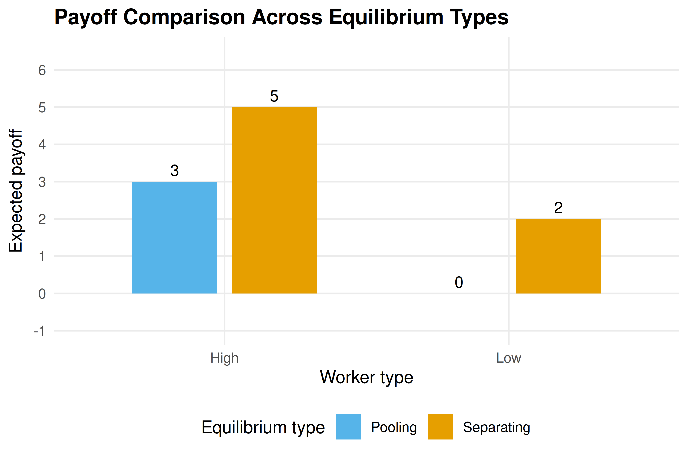

7 Bayesian Games
Games of incomplete information where players hold private types and form beliefs about opponents. Covers Bayesian Nash equilibrium, signaling games, and separating versus pooling equilibria with a worked job-market signaling example.
Learning objectives
- Explain how types and prior beliefs extend the normal-form model to incomplete information settings.
- Define Bayesian Nash equilibrium and compute it for small games with discrete types.
- Distinguish signaling games from other Bayesian games and identify separating, pooling, and semi-separating equilibria.
- Implement expected-payoff calculations under type uncertainty in R and produce publication-quality figures.
7.1 Motivation
In every game we have studied so far — from normal-form games (3) to extensive-form games (6) — players share complete knowledge of the payoff structure. In practice, this assumption is heroic. A firm entering a new market does not know its rival’s cost structure. A job applicant knows her own ability, but the employer does not. A bidder in an auction knows his own valuation but must guess at others’ valuations.
John Harsanyi’s insight was that incomplete information can be modeled by introducing types: each player privately observes a type drawn from a commonly known distribution, and this type determines the player’s payoffs. The resulting game is a Bayesian game, and the appropriate equilibrium concept is Bayesian Nash equilibrium (BNE). As Osborne (2004, Chapter 9) develops in detail, BNE asks each player to choose a strategy — a complete plan mapping types to actions — that is optimal in expectation over the other players’ types.
Signaling games, a particularly important class of Bayesian games, arise when an informed player moves first and an uninformed player observes the action before responding. Spence’s job-market signaling model is the classic example: a worker’s education choice may reveal (or conceal) her productivity type to employers.
7.2 Theory
7.2.1 The Bayesian game model
A Bayesian game extends the standard normal form with three additional ingredients:
- Type spaces. Each player \(i\) has a type \(\theta_i \in \Theta_i\). A type encodes any private information that affects payoffs.
- Prior beliefs. A common prior probability distribution \(p(\theta_1, \ldots, \theta_n)\) governs the joint distribution of types. Players update beliefs using Bayes’ rule after observing their own type.
- Type-contingent payoffs. Player \(i\)’s payoff function \(u_i(a_1, \ldots, a_n; \theta_i)\) may depend on \(i\)’s own type (and possibly on others’ types).
A strategy in a Bayesian game is a function \(s_i : \Theta_i \to A_i\) mapping each possible type to an action.
7.2.2 Bayesian Nash equilibrium
Definition: Bayesian Nash Equilibrium
A strategy profile \(s^* = (s_1^*, \ldots, s_n^*)\) is a Bayesian Nash equilibrium if, for every player \(i\) and every type \(\theta_i \in \Theta_i\):
\[\begin{equation} \mathbb{E}_{\theta_{-i}}\bigl[u_i(s_i^*(\theta_i),\, s_{-i}^*(\theta_{-i});\, \theta_i) \mid \theta_i\bigr] \geq \mathbb{E}_{\theta_{-i}}\bigl[u_i(a_i,\, s_{-i}^*(\theta_{-i});\, \theta_i) \mid \theta_i\bigr] \tag{7.1} \end{equation}\]
for all \(a_i \in A_i\).
In words, each type of each player maximizes expected payoff given the prior distribution over others’ types and others’ equilibrium strategies. BNE is the natural extension of Nash equilibrium (4) to incomplete information.
7.2.3 Signaling games
A signaling game is a two-player Bayesian game with sequential moves:
- Nature draws the sender’s type \(\theta \in \Theta\) according to a prior \(p(\theta)\).
- The sender observes \(\theta\) and chooses a signal (message) \(m \in M\).
- The receiver observes \(m\) (but not \(\theta\)) and chooses an action \(a \in A\).
- Payoffs \(u_S(m, a; \theta)\) and \(u_R(m, a; \theta)\) are realized.
The equilibrium concept for signaling games is perfect Bayesian equilibrium (PBE), which requires that the receiver’s beliefs about \(\theta\) are derived from Bayes’ rule whenever possible.
7.2.4 Separating vs. pooling equilibria
- Separating equilibrium: Different types choose different signals, so the receiver can perfectly infer the sender’s type from the observed message.
- Pooling equilibrium: All types choose the same signal, so the receiver learns nothing beyond the prior.
- Semi-separating (partial pooling) equilibrium: Some types pool while others separate, or types randomize between signals.
The existence and nature of these equilibria depend on the cost structure of signaling and the payoff differences across types.
7.3 Implementation in R
We implement a two-type signaling game inspired by the Spence job-market model. A worker is either High-ability (\(\theta_H\)) or Low-ability (\(\theta_L\)), each with equal prior probability. The worker chooses whether to acquire education (\(E\)) or not (\(N\)). Education costs differ by type: it costs the High type \(c_H = 1\) and the Low type \(c_L = 4\). An employer then offers a wage equal to the expected productivity conditional on the observed education decision.
# Type parameters
types <- c("High", "Low")
prior <- c(High = 0.5, Low = 0.5)
productivity <- c(High = 6, Low = 2)
edu_cost <- c(High = 1, Low = 4)
# Wages under different employer beliefs
wage_if_high <- productivity["High"]
wage_if_low <- productivity["Low"]
wage_pooled <- sum(prior * productivity)
cat(sprintf("Productivity: High = %d, Low = %d\n",
productivity["High"], productivity["Low"]))#> Productivity: High = 6, Low = 2#> Education cost: High = 1, Low = 4#> Pooling wage (prior expectation): 4.07.3.1 Expected payoffs under each equilibrium type
# Separating equilibrium: High educates, Low does not
# Employer infers type perfectly from education choice
sep_payoffs <- tibble(
type = rep(types, each = 2),
action = rep(c("Educate", "No Education"), times = 2),
payoff = c(
wage_if_high - edu_cost["High"], # High, Educate (separating)
wage_if_low, # High, No Education (deviate)
wage_if_high - edu_cost["Low"], # Low, Educate (deviate)
wage_if_low # Low, No Education (separating)
),
equilibrium = c("Separating", "Deviation", "Deviation", "Separating")
)
# Pooling equilibrium: both types educate
# Employer pays pooling wage to educated, low wage to uneducated
pool_payoffs <- tibble(
type = rep(types, each = 2),
action = rep(c("Educate", "No Education"), times = 2),
payoff = c(
wage_pooled - edu_cost["High"], # High, Educate (pooling)
wage_if_low, # High, No Education (deviate)
wage_pooled - edu_cost["Low"], # Low, Educate (pooling)
wage_if_low # Low, No Education (deviate)
),
equilibrium = c("Pooling", "Deviation", "Pooling", "Deviation")
)
cat("Separating equilibrium payoffs:\n")#> Separating equilibrium payoffs:
sep_payoffs |>
select(type, action, payoff, equilibrium) |>
print()#> # A tibble: 4 × 4
#> type action payoff equilibrium
#> <chr> <chr> <dbl> <chr>
#> 1 High Educate 5 Separating
#> 2 High No Education 2 Deviation
#> 3 Low Educate 2 Deviation
#> 4 Low No Education 2 Separating
cat("\nPooling equilibrium payoffs:\n")#>
#> Pooling equilibrium payoffs:
pool_payoffs |>
select(type, action, payoff, equilibrium) |>
print()#> # A tibble: 4 × 4
#> type action payoff equilibrium
#> <chr> <chr> <dbl> <chr>
#> 1 High Educate 3 Pooling
#> 2 High No Education 2 Deviation
#> 3 Low Educate 0 Pooling
#> 4 Low No Education 2 Deviation7.3.2 Checking incentive compatibility
# Separating equilibrium IC checks
high_sep <- wage_if_high - edu_cost["High"] # 6 - 1 = 5
high_dev <- wage_if_low # 2
low_sep <- wage_if_low # 2
low_dev <- wage_if_high - edu_cost["Low"] # 6 - 4 = 2
cat("Separating equilibrium IC checks:\n")#> Separating equilibrium IC checks:
cat(sprintf(" High type: Educate (%.0f) vs No Education (%.0f) -> %s\n",
high_sep, high_dev,
ifelse(high_sep >= high_dev, "IC satisfied", "IC violated")))#> High type: Educate (5) vs No Education (2) -> IC satisfied
cat(sprintf(" Low type: No Education (%.0f) vs Educate (%.0f) -> %s\n",
low_sep, low_dev,
ifelse(low_sep >= low_dev, "IC satisfied", "IC violated")))#> Low type: No Education (2) vs Educate (2) -> IC satisfied7.3.3 Publication figure: expected payoffs by type and equilibrium
# Combine equilibrium payoffs for the chosen (non-deviation) actions
eq_summary <- tibble(
type = rep(types, 2),
equilibrium = rep(c("Separating", "Pooling"), each = 2),
payoff = c(
wage_if_high - edu_cost["High"], # High, separating
wage_if_low, # Low, separating
wage_pooled - edu_cost["High"], # High, pooling
wage_pooled - edu_cost["Low"] # Low, pooling
),
action = c("Educate", "No Education", "Educate", "Educate")
)
p_bayesian <- ggplot(eq_summary,
aes(x = type, y = payoff, fill = equilibrium)) +
geom_col(position = position_dodge(width = 0.7), width = 0.6) +
geom_text(aes(label = payoff),
position = position_dodge(width = 0.7),
vjust = -0.5, size = 3.5) +
scale_fill_manual(values = c("Separating" = okabe_ito[1],
"Pooling" = okabe_ito[2]),
name = "Equilibrium type") +
scale_y_continuous(name = "Expected payoff",
limits = c(-1, 6.5),
breaks = seq(-1, 6, 1)) +
scale_x_discrete(name = "Worker type") +
labs(title = "Payoff Comparison Across Equilibrium Types") +
theme_publication()
p_bayesian
Figure 7.1: Expected payoffs for each worker type under separating and pooling equilibria in the job-market signaling game. In the separating equilibrium the High type earns 5 (wage 6 minus education cost 1) while the Low type earns 2. In the pooling equilibrium the High type earns 3 (pooling wage 4 minus cost 1) and the Low type earns 0 (pooling wage 4 minus cost 4). Bars shaded by equilibrium type.
save_pub_fig(p_bayesian, "bayesian-payoff-comparison")7.4 Worked example
We walk through the separating equilibrium step by step.
Step 1: Set up the game. Nature draws the worker’s type: High (\(\theta_H\), productivity 6) or Low (\(\theta_L\), productivity 2), each with probability 0.5. Education costs 1 for the High type and 4 for the Low type.
Step 2: Propose a separating strategy. Suppose the High type educates and the Low type does not.
Step 3: Derive employer beliefs. Under this strategy, the employer observes \(E\) and infers the worker is High with certainty, offering wage 6. Observing \(N\), the employer infers the worker is Low with certainty, offering wage 2.
Step 4: Check incentive compatibility. The High type’s payoff from educating is \(6 - 1 = 5\), and from deviating to no education is \(2\). Since \(5 > 2\), the High type has no incentive to deviate. The Low type’s payoff from not educating is \(2\), and from deviating to education is \(6 - 4 = 2\). Since \(2 \geq 2\) (weak IC), the Low type has no strict incentive to deviate.
Step 5: Verify the equilibrium. Both types play optimally given employer beliefs, and beliefs are consistent with strategies via Bayes’ rule. This constitutes a perfect Bayesian equilibrium.
# Payoff summary table
worked_example <- tibble(
`Worker type` = c("High", "Low"),
`Equilibrium action` = c("Educate", "No Education"),
`Wage received` = c(6, 2),
`Education cost` = c(1, 0),
`Net payoff` = c(5, 2),
`Deviation payoff` = c(2, 2),
`IC satisfied?` = c("Yes (5 > 2)", "Yes (2 >= 2)")
)
worked_example |>
gt() |>
tab_header(
title = "Separating Equilibrium in the Job-Market Signaling Game"
) |>
cols_align(align = "center")| Separating Equilibrium in the Job-Market Signaling Game | ||||||
| Worker type | Equilibrium action | Wage received | Education cost | Net payoff | Deviation payoff | IC satisfied? |
|---|---|---|---|---|---|---|
| High | Educate | 6 | 1 | 5 | 2 | Yes (5 > 2) |
| Low | No Education | 2 | 0 | 2 | 2 | Yes (2 >= 2) |
Note that the separating equilibrium Pareto-dominates the pooling equilibrium for the High type (payoff 5 vs. 3) but is weakly better for the Low type as well (payoff 2 vs. 0). This is a distinctive feature of signaling models: the ability to separate benefits the high type at the cost of an investment (education) that is socially wasteful if it does not enhance actual productivity.
7.5 Extensions
Bayesian games and signaling models underpin a vast literature in economics and political science:
- Mechanism design reverses the analysis: instead of solving a given game, the designer chooses the rules to achieve a desired outcome. Auctions (4) are a leading application.
- Cheap talk games are signaling games where the signal is costless. Equilibrium analysis then focuses on how much information can be credibly communicated.
- Dynamic signaling extends one-shot signaling to repeated interactions, connecting to the folk-theorem results of 8.
- Refinements such as the Intuitive Criterion (Cho and Kreps, 1987) restrict off-path beliefs to eliminate implausible pooling equilibria.
For a thorough treatment of Bayesian games, see Osborne (2004, Chapter 9) and Shoham & Leyton-Brown (2009). The original formalization of types and Bayesian equilibrium traces to Harsanyi’s foundational work, building on the strategic framework of Neumann & Morgenstern (1944).
Exercises
Modified signaling costs. Suppose the Low type’s education cost falls to \(c_L = 3\). Does the separating equilibrium from the worked example survive? If not, what is the minimum cost \(c_L\) that sustains separation? Verify your answer in R.
Pooling equilibrium check. In the worked example, verify that a pooling equilibrium where both types choose No Education can be sustained. What off-path beliefs about a worker who deviates to Education would support this equilibrium?
Three types. Extend the signaling game to three types: High (productivity 8, cost 1), Medium (productivity 5, cost 3), and Low (productivity 2, cost 6), with equal priors. Find conditions under which a fully separating equilibrium exists.
BNE in a Cournot game. Two firms compete in quantities. Firm 1’s marginal cost is commonly known to be \(c_1 = 2\). Firm 2’s marginal cost is \(c_2 = 1\) (with probability 0.5) or \(c_2 = 3\) (with probability 0.5), known only to Firm 2. Inverse demand is \(P = 10 - Q\). Compute the Bayesian Nash equilibrium quantities. (Hint: Firm 2 has two types, each choosing a quantity; Firm 1 chooses a single quantity that is optimal in expectation.)
Visualization. Create a figure showing how the High type’s payoff advantage in the separating equilibrium changes as the cost ratio \(c_L / c_H\) varies from 1 to 8. At what ratio does the separating equilibrium first become sustainable?
Solutions appear in D.